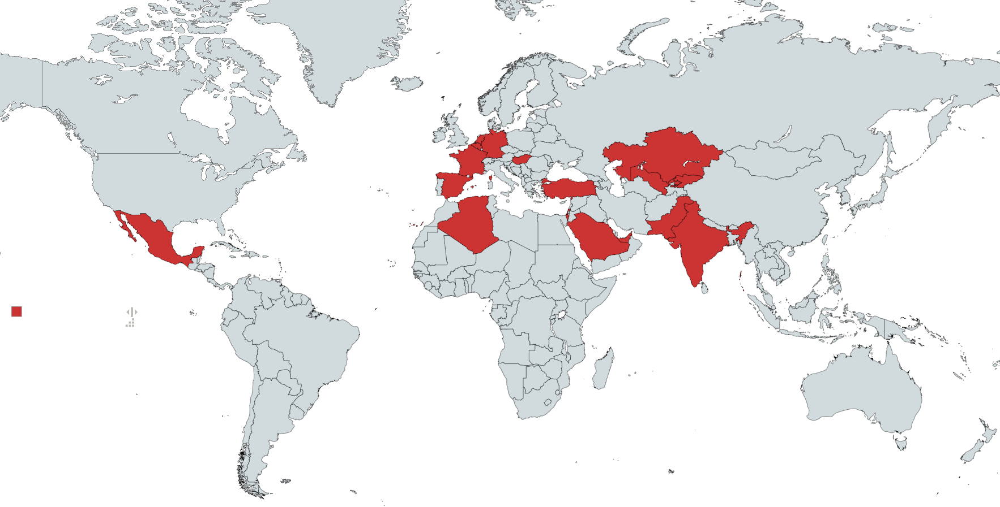

Pegasus spyware, developed by the NSO Group, is one of the most sophisticated surveillance tools ever created. Originally marketed as a tool for governments to combat crime and terrorism, it was revealed that Pegasus had been used to target journalists, activists, and political leaders worldwide. This page examines the mechanics of Pegasus, the ethical concerns surrounding its use, and its implications for privacy and human rights.
The map below highlights the countries where Pegasus spyware infections were reported.
The graph below illustrates the contrast between the claimed targets of Pegasus spyware and its actual usage based on reported cases.
Reproducibility: You can download the R code used to generate the above graph.
Original Claim: Pegasus spyware was marketed as a tool to combat crime and terrorism, with targets including terrorists and criminals.
The Truth: Investigations revealed that Pegasus was primarily used to surveil journalists, human rights activists, political opponents, lawyers, diplomats, and even heads of state.
The map and graph above highlight this stark contrast, demonstrating how the tool was used for purposes far beyond its claimed intent.
Pegasus highlights the dark side of technological innovation when used unethically. Governments and tech companies must strike a balance between surveillance for security and the protection of human rights. Public awareness and advocacy for stricter regulations are essential to prevent future misuse.